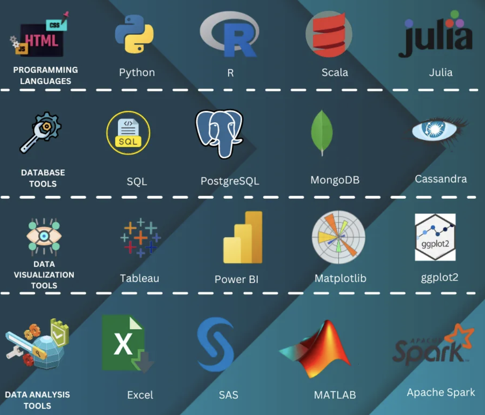
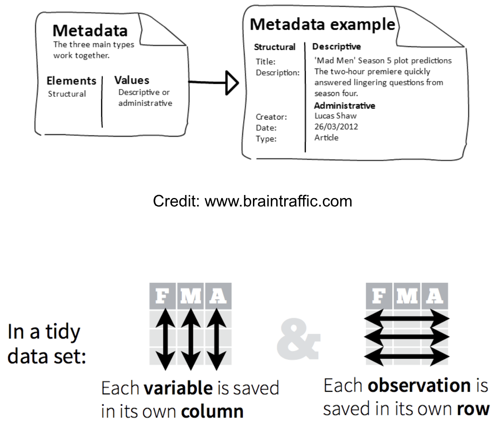
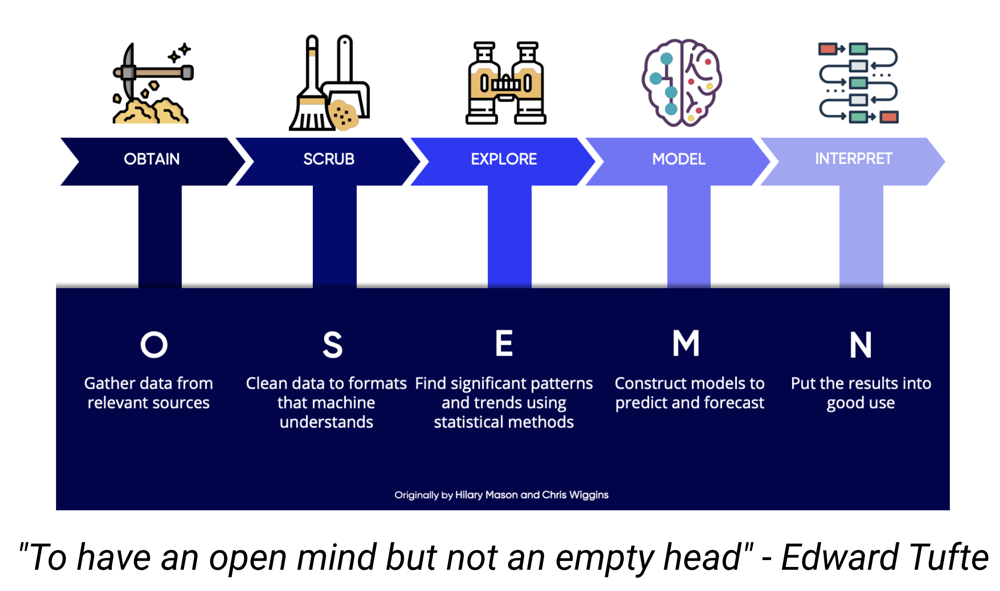
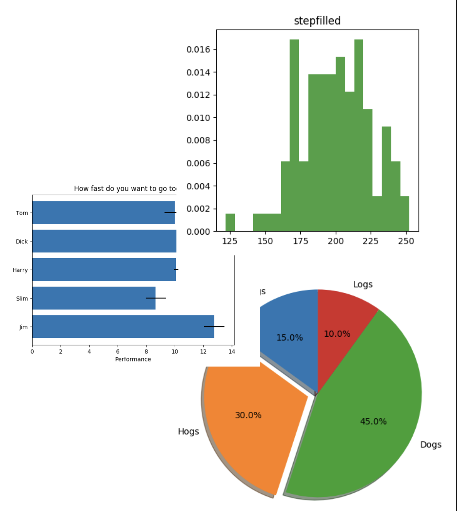

The process of breaking down data collected about things that have already happened to find patterns
Organizing Data
Start looking for Patterns
Data Analytics
The process of using insights gained from past data to make decisions about the future
Larger in Scope
Making Decisions
Exploratory Data Analysis (EDA)
EDA involves the initial exploration and examination of data to gain insights and formulate hypotheses
Benefits of EDA
Provides an understanding of data
Identifies outliers
Facilitates the generation of hypotheses
Benefits of Using Visualization in EDA
Visualizations make complex datasets more accessible
Allows for the detection of patterns, rends, and outliers
Supports data-driven decision-making
Limitations of EDA
Time-consuming
Can be misleading or incomplete
Can be difficult to communicate or reproduce
Common Tools Used in Data Analysis and Exploration

Data Preparation - a Labor Intensive Work
Raw vs. Tidy Data
Raw (or Primary) Data
In its original form after collection
Might contains missing data points and errors
“Raw” is relative
Shall keep a copy of whenever possible
Tidy (or Clean) Data
In a processed or predefined form
Missing data is marked and errors are removed
“Tidy” is relative
Shall keep a copy whenever possible with version tags
Quartz Guide to Bad Data
What Should we Do with Bad Data?
Issues that your source should solve
missing values, inconsistency, duplicates, etc.
Issues that you should solve
data in binary formats, annotations, formats, etc.
Issues a third-party expert should help you solve
untrustworthy source,
Issues a programmer should help you solve
data in scanned documents, wrong aggregation, etc.
Key Components of Tidy Dataset
Metadata that include the description about the variables, units, summary choices, and experimental study design to make the work reproducible
Processing script or information about the software used to process the data
Standardized format to make it more efficient to process

Types of Data Science Problems
Descriptive (summaries)
Exploratory (search for unknown)
Inferential (find correlations)
Predictive (make predictions)
Casual (explore causations)
Mechanistic (determine governing principles)
Data Science Project Lifecycle

Visualization for Exploratory Data Analysis
A Picture Is Worth a Thousand Words
Our brains have been evolved to be very efficient in visual analysis
Visualization helps us to:
absorbs information quickly
connect the dots
find patterns and outliers
acquire & share insights
attract audience
Types of Visualizations
One-Variable Graph
Histogram shows distribution and concentration of data
Bar Plot compares the same variable across different groups and shows how the data distributed among the groups
Pie Chart shows the groups of what your data is made, allows you to see the most and least as well as everything in-between, and shows the distribution of the data among groups

Two-Variable Graph
Scatter Plot shows all the data on the plot, you can see the distribution, correlations, and the spread of the data between two variables
Line Plot similar to scatter plot but the points are connected, make it easier to see the trends and evolution
2D Histogram shows distribution of two variables related to each other
Box or Whisker Plot shows spread of data and statistical information
Three Variable Graph
Heatmap shows two variables and other quantity (amount, intensity, height) with a colormap
Multiple-variable bar plot shows multiple variables for multiple groups
3D Plot shows the 3rd variable on surface in 3D plot
For high-dimensional datasets, applying the t-Distributed Stochastic Neighbor Embedding (t-SNE) algorithm and alike to reduce the dimension.